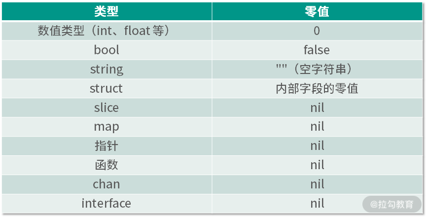

- 00 开篇词 Go 为开发者的需求设计，带你实现高效工作.md.html
- 01 基础入门：编写你的第一个 Go 语言程序.md.html
- 02 数据类型：你必须掌握的数据类型有哪些？.md.html
- 03 控制结构：if、for、switch 逻辑语句的那些事儿.md.html
- 04 集合类型：如何正确使用 array、slice 和 map？.md.html
- 05 函数和方法：Go 语言中的函数和方法到底有什么不同？.md.html
- 06 struct 和 interface：结构体与接口都实现了哪些功能？.md.html
- 07 错误处理：如何通过 error、deferred、panic 等处理错误？.md.html
- 08 并发基础：Goroutines 和 Channels 的声明与使用.md.html
- 09 同步原语：sync 包让你对并发控制得心应手.md.html
- 10 Context：你必须掌握的多线程并发控制神器.md.html
- 11 并发模式：Go 语言中即学即用的高效并发模式.md.html
- 12 指针详解：在什么情况下应该使用指针？.md.html
- 13 参数传递：值、引用及指针之间的区别？.md.html
- 14 内存分配：new 还是 make？什么情况下该用谁？.md.html
- 15 运行时反射：字符串和结构体之间如何转换？.md.html
- 16 非类型安全：让你既爱又恨的 unsafe.md.html
- 17 SliceHeader：slice 如何高效处理数据？.md.html
- 18 质量保证：Go 语言如何通过测试保证质量？.md.html
- 19 性能优化：Go 语言如何进行代码检查和优化？.md.html
- 20 协作开发：模块化管理为什么能够提升研发效能？.md.html
- 21 网络编程：Go 语言如何玩转 RESTful API 服务？.md.html
- 22 网络编程：Go 语言如何通过 RPC 实现跨平台服务？.md.html
- 23 结束语 你的 Go 语言成长之路.md.html
- 捐赠
13 参数传递：值、引用及指针之间的区别？
上节课我留了一个思考题，关于指向接口的指针的思考。在[“第 6 讲| struct 和 interface：结构体与接口都实现了哪些功能？”]中，你已经知道了如何实现一个接口，并且也知道如果值接收者实现了接口，那么值的指针也就实现了该接口。现在我们再一起来复习一下接口实现的知识，然后再解答关于指向接口的指针的思考题。
在下面的代码中，值类型 address 作为接收者实现了接口 fmt.Stringer，那么它的指针类型 *address 也就实现了接口 fmt.Stringer。
ch13/main.go
type address struct {
province string
city string
}
func (addr address) String() string{
return fmt.Sprintf("the addr is %s%s",addr.province,addr.city)
}
在下面的代码示例中，我定义了值类型的变量 add，然后把它和它的指针 &add 都作为参数传给函数 printString，发现都是可以的，并且代码可以成功运行。这也证明了当值类型作为接收者实现了某接口时，它的指针类型也同样实现了该接口。
ch13/main.go
func main() {
add := address{province: "北京", city: "北京"}
printString(add)
printString(&add)
}
func printString(s fmt.Stringer) {
fmt.Println(s.String())
}
基于以上结论，我们继续分析，看是否可以定义一个指向接口的指针。如下所示：
ch13/main.go
var si fmt.Stringer =address{province: "上海",city: "上海"}
printString(si)
sip:=&si
printString(sip)
在这个示例中，因为类型 address 已经实现了接口 fmt.Stringer，所以它的值可以被赋予变量 si，而且 si 也可以作为参数传递给函数 printString。
接着你可以使用 sip:=&si 这样的操作获得一个指向接口的指针，这是没有问题的。不过最终你无法把指向接口的指针 sip 作为参数传递给函数 printString，Go 语言的编译器会提示你如下错误信息：
./main.go:42:13: cannot use sip (type *fmt.Stringer) as type fmt.Stringer in argument to printString:
*fmt.Stringer is pointer to interface, not interface
于是可以总结为：虽然指向具体类型的指针可以实现一个接口，但是指向接口的指针永远不可能实现该接口。
所以你几乎从不需要一个指向接口的指针，把它忘掉吧，不要让它在你的代码中出现。
通过这个思考题，相信你也对 Go 语言的值类型、引用类型和指针等概念有了一定的了解，但可能也存在一些迷惑。这节课我将更深入地分析这些概念。
修改参数
假设你定义了一个函数，并在函数里对参数进行修改，想让调用者可以通过参数获取你最新修改的值。我仍然以前面课程用到的 person 结构体举例，如下所示：
ch13/main.go
func main() {
p:=person{name: "张三",age: 18}
modifyPerson(p)
fmt.Println("person name:",p.name,",age:",p.age)
}
func modifyPerson(p person) {
p.name = "李四"
p.age = 20
}
type person struct {
name string
age int
}
在这个示例中，我期望通过 modifyPerson 函数把参数 p 中的 name 修改为李四，把 age 修改为 20 。代码没有错误，但是运行一下，你会看到如下打印输出：
person name: 张三 ,age: 18
怎么还是张三与 18 呢？我换成指针参数试试，因为在上节课中我们已经知道可以通过指针修改指向的对象数据，如下所示：
modifyPerson(&p)
func modifyPerson(p *person) {
p.name = "李四"
p.age = 20
}
这些代码用于满足指针参数的修改，把接收的参数改为指针参数，以及在调用 modifyPerson 函数时，通过&取地址符传递一个指针。现在再运行程序，就可以看到期望的输出了，如下所示：
person name: 李四 ,age: 20
值类型
在上面的小节中，我定义的普通变量 p 是 person 类型的。在 Go 语言中，person 是一个值类型，而 &p 获取的指针是 *person 类型的，即指针类型。那么为什么值类型在参数传递中无法修改呢？这也要从内存讲起。
在上节课中，我们已经知道变量的值是存储在内存中的，而内存都有一个编号，称为内存地址。所以要想修改内存中的数据，就要找到这个内存地址。现在，我来对比值类型变量在函数内外的内存地址，如下所示：
ch13/main.go
func main() {
p:=person{name: "张三",age: 18}
fmt.Printf("main函数：p的内存地址为%p\n",&p)
modifyPerson(p)
fmt.Println("person name:",p.name,",age:",p.age)
}
func modifyPerson(p person) {
fmt.Printf("modifyPerson函数：p的内存地址为%p\n",&p)
p.name = "李四"
p.age = 20
}
其中，我把原来的示例代码做了更改，分别打印出在 main 函数中变量 p 的内存地址，以及在 modifyPerson 函数中参数 p 的内存地址。运行以上程序，可以看到如下结果：
main函数：p的内存地址为0xc0000a6020
modifyPerson函数：p的内存地址为0xc0000a6040
person name: 张三 ,age: 18
你会发现它们的内存地址都不一样，这就意味着，在 modifyPerson 函数中修改的参数 p 和 main 函数中的变量 p 不是同一个，这也是我们在 modifyPerson 函数中修改参数 p，但是在 main 函数中打印后发现并没有修改的原因。
导致这种结果的原因是 Go 语言中的函数传参都是值传递。 值传递指的是传递原来数据的一份拷贝，而不是原来的数据本身。

（main 函数调用 modifyPerson 函数传参内存示意图）
以 modifyPerson 函数来说，在调用 modifyPerson 函数传递变量 p 的时候，Go 语言会拷贝一个 p 放在一个新的内存中，这样新的 p 的内存地址就和原来不一样了，但是里面的 name 和 age 是一样的，还是张三和 18。这就是副本的意思，变量里的数据一样，但是存放的内存地址不一样。
除了 struct 外，还有浮点型、整型、字符串、布尔、数组，这些都是值类型。
指针类型
指针类型的变量保存的值就是数据对应的内存地址，所以在函数参数传递是传值的原则下，拷贝的值也是内存地址。现在对以上示例稍做修改，修改后的代码如下：
func main() {
p:=person{name: "张三",age: 18}
fmt.Printf("main函数：p的内存地址为%p\n",&p
modifyPerson(&p)
fmt.Println("person name:",p.name,",age:",p.age)
}
func modifyPerson(p *person) {
fmt.Printf("modifyPerson函数：p的内存地址为%p\n",p)
p.name = "李四"
p.age = 20
}
运行这个示例，你会发现打印出的内存地址一致，并且数据也被修改成功了，如下所示：
main函数：p的内存地址为0xc0000a6020
modifyPerson函数：p的内存地址为0xc0000a6020
person name: 李四 ,age: 20
所以指针类型的参数是永远可以修改原数据的，因为在参数传递时，传递的是内存地址。
小提示：值传递的是指针，也是内存地址。通过内存地址可以找到原数据的那块内存，所以修改它也就等于修改了原数据。
引用类型
下面要介绍的是引用类型，包括 map 和 chan。
map
对于上面的例子，假如我不使用自定义的 person 结构体和指针，能不能用 map 达到修改的目的呢？
下面我来试验一下，如下所示：
ch13/main.go
func main() {
m:=make(map[string]int)
m["飞雪无情"] = 18
fmt.Println("飞雪无情的年龄为",m["飞雪无情"])
modifyMap(m)
fmt.Println("飞雪无情的年龄为",m["飞雪无情"])
}
func modifyMap(p map[string]int) {
p["飞雪无情"] =20
}
我定义了一个 map[string]int 类型的变量 m，存储一个 Key 为飞雪无情、Value 为 18 的键值对，然后把这个变量 m 传递给函数 modifyMap。modifyMap 函数所做的事情就是把对应的值修改为 20。现在运行这段代码，通过打印输出来看是否修改成功，结果如下所示：
飞雪无情的年龄为 18
飞雪无情的年龄为 20
确实修改成功了。你是不是有不少疑惑？没有使用指针，只是用了 map 类型的参数，按照 Go 语言值传递的原则，modifyMap 函数中的 map 是一个副本，怎么会修改成功呢？
要想解答这个问题，就要从 make 这个 Go 语言内建的函数说起。在 Go 语言中，任何创建 map 的代码（不管是字面量还是 make 函数）最终调用的都是 runtime.makemap 函数。
小提示：用字面量或者 make 函数的方式创建 map，并转换成 makemap 函数的调用，这个转换是 Go 语言编译器自动帮我们做的。
从下面的代码可以看到，makemap 函数返回的是一个 *hmap 类型，也就是说返回的是一个指针，所以我们创建的 map 其实就是一个 *hmap。
src/runtime/map.go
// makemap implements Go map creation for make(map[k]v, hint).
func makemap(t *maptype, hint int, h *hmap) *hmap{
//省略无关代码
}
因为 Go 语言的 map 类型本质上就是 *hmap，所以根据替换的原则，我刚刚定义的 modifyMap(p map) 函数其实就是 modifyMap(p *hmap)。这是不是和上一小节讲的指针类型的参数调用一样了？这也是通过 map 类型的参数可以修改原始数据的原因，因为它本质上就是个指针。
为了进一步验证创建的 map 就是一个指针，我修改上述示例，打印 map 类型的变量和参数对应的内存地址，如下面的代码所示：
func main(){
//省略其他没有修改的代码
fmt.Printf("main函数：m的内存地址为%p\n",m)
}
func modifyMap(p map[string]int) {
fmt.Printf("modifyMap函数：p的内存地址为%p\n",p)
//省略其他没有修改的代码
}
例子中的两句打印代码是新增的，其他代码没有修改，这里就不再贴出来了。运行修改后的程序，你可以看到如下输出：
飞雪无情的年龄为 18
main函数：m的内存地址为0xc000060180
modifyMap函数：p的内存地址为0xc000060180
飞雪无情的年龄为 20
从输出结果可以看到，它们的内存地址一模一样，所以才可以修改原始数据，得到年龄是 20 的结果。而且我在打印指针的时候，直接使用的是变量 m 和 p，并没有用到取地址符 &，这是因为它们本来就是指针，所以就没有必要再使用 & 取地址了。
所以在这里，Go 语言通过 make 函数或字面量的包装为我们省去了指针的操作，让我们可以更容易地使用 map。其实就是语法糖，这是编程界的老传统了。
注意：这里的 map 可以理解为引用类型，但是它本质上是个指针，只是可以叫作引用类型而已。在参数传递时，它还是值传递，并不是其他编程语言中所谓的引用传递。
chan
还记得我们在 Go 语言并发模块中学的 channel 吗？它也可以理解为引用类型，而它本质上也是个指针。
通过下面的源代码可以看到，所创建的 chan 其实是个 *hchan，所以它在参数传递中也和 map 一样。
func makechan(t *chantype, size int64) *hchan {
//省略无关代码
}
严格来说，Go 语言没有引用类型，但是我们可以把 map、chan 称为引用类型，这样便于理解。除了 map、chan 之外，Go 语言中的函数、接口、slice 切片都可以称为引用类型。
小提示：指针类型也可以理解为是一种引用类型。
类型的零值
在 Go 语言中，定义变量要么通过声明、要么通过 make 和 new 函数，不一样的是 make 和 new 函数属于显式声明并初始化。如果我们声明的变量没有显式声明初始化，那么该变量的默认值就是对应类型的零值。
从下面的表格可以看到，可以称为引用类型的零值都是 nil。

(各种类型的零值)
总结
在 Go 语言中，函数的参数传递只有值传递，而且传递的实参都是原始数据的一份拷贝。如果拷贝的内容是值类型的，那么在函数中就无法修改原始数据；如果拷贝的内容是指针（或者可以理解为引用类型 map、chan 等），那么就可以在函数中修改原始数据。

所以我们在创建一个函数的时候，要根据自己的真实需求决定参数的类型，以便更好地服务于我们的业务。
这节课中，我讲解 chan 的时候没有举例，你自己可以自定义一个有 chan 参数的函数，作为练习题。
下节课我将介绍“内存分配：new 还是 make？什么情况下该用谁？”记得来听课！
© 2019 - 2023 Liangliang Lee. Powered by gin and hexo-theme-book.